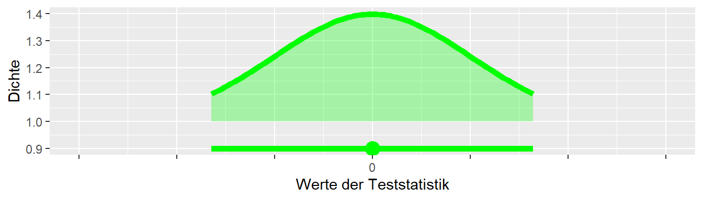

10 Parameterschätzung
Bisher haben wir die Daten mittels Hypothesentests betrachtet. D.h. wir haben eine \(H_0\) und \(H_1\)-Hypothese formuliert und dann anhand der Stichprobenverteilung abgeschätzt wie kompatibel unsere beobachteter Wert mit der \(H_0\)-Hypothese ist. Dadurch haben eine dichotome Betrachtung der Daten durchgeführt. Entweder der beobachtete Wert war statistisch signifikant unter der \(H_0\) oder eben nicht. Diese Unterteilung der Entscheidung in nur zwei verschiedene Ausgänge, neben dem Problem das wir eine Frage beantworten die wir oftmals gar nicht gestellt haben, bringt aber ein paar Grundlegende Nachteile mit sich die wir nun genauer betrachten.
Das folgende Beispiel ist entnommen aus Cumming (2013, p.1). Wir haben zwei Forschergruppen. Die Gruppen Glücklich und Pech. Beide Gruppen haben das gleiche Experiment durchgeführt, eine Krafttrainingsintervention. Die Gruppe Glücklich hat insgesamt \(N = 44\) TeilnehmerInnen in zwei unabhängigen Gruppen, während die Gruppe Pech \(N = 36\) TeilnehmerInnen in zwei unabhängigen Gruppen untersucht hat. Die beiden Untersuchung kamen zum folgenden Ergebnis (siehe Tabelle 10.1)
| Gruppe | \(D_{MW}\) | \(D_{STD}\) | Statistik | p-Wert |
|---|---|---|---|---|
| Glücklich | \(3.61\) | \(6.97\) | \(t(42) = 2.43\) | \(0.02\) |
| Pech | \(2.23\) | \(7.59\) | \(t(34) = 1.24\) | \(0.22\) |
Wenn wir eine Irrtumswahrscheinlichkeit von \(\alpha = 0.05\) ansetzten. Dann hat unter den beobachteten Daten nur die Gruppe Glücklich ein statistisch signifikantes Ergebnis, da der p-Wert \(p = 0.02 < 0.05 = \alpha\) ist. Die Gruppe Pech dagegen hat kein statistisch Signifikantes Ergebnis und kann mit \(p = 0.22 > 0.05 = \alpha\) die \(H_0\) nicht ablehnen. Wenn wir nun die zu den beiden Untersuchungen gehörenden Veröffentlichungen lesen würden, und die Ergebnisse streng dichotom betrachten würden, dann hätten wir zwei widersprüchliche Ergebnisse. Wir könnten zu erklären versuchen damit, dass die Stichprobengröße in Pech zu klein und vielleicht zu variabel war. Allerdings, wenn wir die Effektstärke aus dem Experiment von Glücklich ansetzen, dann hätte die Power auch für die Stichprobengröße von Pech ausgereicht (Power \(>.9\)) um relativ sicher ein statistisch signifikantes Ergebnis zu beobachten. Stellen wir die beiden beobachteten Effekte einmal graphisch dar.
Wenn wir uns die Differenzen in Abbildung 10.1 anschauen. Dann sehen die Ergebnisse eigentlich gar nicht so widersprüchlich aus. Beide Effekte sind in der gleichen Richtung, nur die Effektstärke unterscheidet sich zwischen den beiden Gruppen. Wenn uns jemand zwingen würde eine Abschätzung zu geben wir groß der Effekt der Trainingsintervention ist, dann würde wir wahrscheinlich einen Wert zwischen den beiden beobachteten Werte angeben.
Schauen wir uns mal einen anderen Fall an.

Hätten wir das Ergebnis aus Abbildung 10.2 beobachtet, dann würde wir wahrscheinlich schon eher von einem widersprüchlichen Ergebnis in der Literatur sprechen. Wenn wir wieder unter Zwang einen Wert angeben müssten, dann wahrscheinlich einen in der Nähe von \(D = 0\). In beiden Fällen haben wir aber unter der rein dichotomen Betrachtung das gleiche Ergebnis (1 x statisch signifikant + 1 x statistisch nicht signifikant). Daraus können wir schließen, dass wir bei der Interpretation von Forschungsergebnissen nicht nur die statistische Signifikanz betracheten sollten, sondern die Richtung der Effekte und deren Größe ebenfalls einbezogen werden sollten wenn wir uns ein Bild über die Evidenz machen wollen. Dazu gehört natürlich ebenfalls eine Betrachtung des Forschungsdesigns und insbesondere der Stichprobengröße \(N\).
Beispiel 10.1 In Coleman u. a. (2023) wurde die Auswirkungen von betreutem gegenüber unbetreutem Krafttraining auf Kraft und Hypertrophie bei trainierten Personen untersucht. \(N = 36\) junge Männer und Frauen wurden zufällig einer von zwei experimentellen Gruppen zugewiesen, um ein 8-wöchiges Krafttrainingsprogramm durchzuführen: Eine Gruppe erhielt direkte Aufsicht während der Trainingseinheiten (supervision: SUP) während die Kontrollgruppe dasselbe Programm ohne Betreuung (unsupervised: UNSUP) durchführte. Während die meisten Ergebnisse keine Unterschiede zwischen den Gruppen andeuteten, zeigten die Ergebnisse eine erhöhte Zunahme der Gesamtkörpermuskelmasse um \(0.54,\ 90\%CI[0.05, 0.98]\)Kg. D.h. wenn wir als Zielgröße die Muskelmasse ansteuern wollen müssen wir uns anhand des Intervallsüberlegen, ob der Aufwand eines vollständig betreuten Trainings hinsichtlich eines möglicherweise minimalen Zuwachs von \(\Delta = 0.05\)Kg gerechtfertigt ist.
10.1 Welche Hypothesen sind kompatibel mit dem beobachteten Effekt?
Aus den Ausführungen von eben ist hoffentlich klargeworden, dass wir den beobachteten Effekt, also im Beispiel die Größe des Unterschied, ebenfalls dokumentieren müssen, da er für die Interpretation des Ergebnisse wichtig ist. Letztendlich ist die Größe des Effekts auch ausschlaggebend ob ich zum Beispiel eine Trainingsintervention mit meinen Athletinnen durchführe. Mir reicht es nicht zu wissen das ein statistisch signifikanter Effekt in Studien gefunden wurde, sondern ich möchte auch die Größe des Effekts wissen.
Gehen wir zurück zu unseren Lummerland-Beispiel. Das Ergebnis der Intervention könnte beispielsweise die folgenden Stichprobenkennwerte bei \(N = 9\) haben. Wir beobachten einen Unterschied von \(D = \bar{x}_{treat} - \bar{x}_{con} = 350\) zwischen den Gruppen. Beide Stichproben zeigen eine Standardabweichung von \(s = 54\) was zu einem Standardfehler von \(s_e = 25\) führt (Rechnung unterschlagen). Dies ist unsere Schätzung der Populationsparameter \(\mu\) und \(\sigma\) anhand der Stichprobe. Der Standardfehler gibt uns eine Schätzung über die Präzision unseres Schätzwertes \(D\). Wenn der Standardfehler \(s_e\) sehr groß ist, dann bedeutet dies, dass wir den Wert nur sehr unpräzise geschätzt haben. Anderes herum wenn \(s_e\) sehr klein ist. Daran schließt sich die Frage an, was die Präzision für meine Schätzung bedeutet. Präzision in diesem Zusammenhang bedeutet welche anderen Werte neben dem beobachteten Wert sind die möglicherweise auch noch plausibel genug um den beobachteten Wert generiert zu haben? In unserem Beispiel, welche anderen Unterschiedswerte \(D\) sind anhand der beobachteten Daten ebenfalls plausibel?
Der Wert \(D = 350\) spricht dafür das der wahrscheinlichste Wert für \(\Delta\) eben \(\Delta = 350\) ist. Allerdings, ist es auch nachvollziehbar, dass der Wert \(\Delta = 350 - 0.0000001\) ebenfalls nicht direkt unplausibel ist. Letztendlich zeigen wir mit Hilfe des Standardfehler \(s_e = 25\) das unserer Schätzung eben mit einer Unsicherheit behaftet ist. Mit der gleichen Überlegung könnten wir daher den Wert \(\Delta = 350 - \frac{54}{2}\) wahrscheinlich auch noch als nicht komplett abwegig begründen. Nach diesen Ausführung müssen wir uns daher zunächst einmal überlegen, was genau plausibel in diesem Zusammenhang heißen könnte.
Steigen wir wieder mit der \(H_0\) ein. Wir behalten die \(H_0\) bei, wenn der beobachtete Wert der Teststatistik nicht in den kritischen Bereichen unter der Annahme der Korrektheit von \(H_0\) liegt. Wenn der beobachtete Wert im kritischen Bereich liegt, dann sehen wir ihn unter der \(H_0\) als überraschend oder eben nicht plausibel an. Diesen Ansatz können daher umdrehen und umgekehrt, wenn der Wert nicht im kritischen Bereich liegt, dann ist er unter der \(H_0\) plausibel und nicht überraschend. Dementsprechend, können wir ein Kriterium für Plausibilität so definieren, wenn der beobachtete Wert unter der angenommenen Hypothese nicht zur Ablehnung der Hypothese führt. Gehen wir jetzt von einem beobachteten Wert aus, dann können wir die Frage so stellen: Welche Hypothesen, wenn wir sie vorher als \(H_0\) definiert hätten, würden unter dem beobachteten Wert nicht abgelehnt werden. Anders, wir such nun alle diejenigen \(H_0\)-Hypothesen die, wenn wir so vor dem Experiment angesetzt hätten beibehalten worden wären.
In Abbildung 10.3 ist eine Verteilung und derjenige Bereich abgetragen den wir bisher als nicht kritisch bezeichnet haben. D.h. alle Werte die im grünen Bereich liegen sind kompatible mit der angesetzten \(H_0\).

Fügen wir nun einen beobachteten Wert hinzu (Abbildung 10.4).
Der Wert liegt im grünen Bereich und ist daher kompatibel mit der angesetzten Hypothese. Kompatibel definiert, als wir würden die Hypothese unter dem beobachteten Wert nicht ablehnen.
Halten wir den beobachten Wert nun fixiert und schauen uns eine anderer Hypothese \(H_0^*\) an. Diese neue Hypothese \(H_0^*\) ist nach links verschoben. Dies führt dementsprechend dazu, dass der mit der Hypothese kompatible Bereich ebenfalls nach links verschoben ist.

In Abbildung 10.5 ist nun der Bereich für die neue Hypothese \(H_0^*\) abgetragen. Wie zu sehen ist, liegt der beobachtete Wert auch für diese Hypothese in dem Bereich den wir unter der neuen Hypothese \(H_0^*\) als unkritisch bzw. kompatibel betrachten. Diesen Ablauf können wir nun in beide Richtungen weiterführen. D.h. wir schieben systematisch \(H_0\)-Hypothesen von \(-\infty\) bis \(\infty\) und schauen ob der beobachtete Wert in den unkritischen Bereichen für die jeweilige Hypothese liegt. Die kleinsten Hypothese, die am weitesten links liegende Hypothese, bezeichnen wir nun als \(H_{lower}\) und entsprechend die größten Hypothese, die am weitesten rechts liegende Hypothese, als \(H_{upper}\). Dadurch haben wir jetzt einen Bereich von Hypothesen ausgezeichnet, mit der Eigenschaft, dass alle Hypothesen zwischen \(H_{lower}\) und \(H_{upper}\) kompatibel mit dem beobachteten Wert sind. Bei all diesen Überlegungen spielt der tatsächlich in der Population liegende Wert \(\Delta\) keine Rolle!
Führen wir eine kleine Vereinfachung der graphischen Darstellung des kompatiblen Bereichs für eine gegeben Hypothese durch.

In Abbildung 10.6 ist der mit den Daten kompatible Hypothesenbereich mittels einer Linie und eines Punktes dargestellt. Der Punkt zeigt den Wert der jeweiligen Hypothese an, während die Striche rechts und links die untere und die obere Grenze des kompatiblen Bereich darstellen. Die Grenzen des kompatiblen Bereichs sind eine Funktion des gewählten \(\alpha\)-Levels. Wenn mein \(\alpha\) kleiner wird, dann dehnen sich die beiden Striche aus. Wenn mein \(\alpha\) größer wird, dann verkürzen sie sich dementsprechend. Nochmal, wir verwenden \(\alpha\) um kritische Bereiche zu definieren. Tragen wir nun einmal alle Intervalle systematisch von links nach rechts ab, deren Hypothesen mit dem beobachteten Wert (den Daten) kompatibel sind. Diese führt dann zu der Darstellung in Abbildung 10.7.

Der beobachetete Wert ist in Gelb abgetragen und wir schieben die Intervalle von links kommend nach rechts. In Abbildung 10.7 haben wir die Intervalle vertikal etwas versetzt um sie besser sichtbar zu machen. Das erste Intervall dessen rechtes Ende die gelbe Line berüht ist dabei die Hypothese mit dem geringsten \(\delta_{\text{low}}\) die noch kompatibel mit den Daten ist. Das gleiche gilt auf der rechten Seite mit der größten Hypothese \(\delta_{\text{upper}}\) deren linker Rand die gelbe Linie gerade so noch streift.
Wenn wir nun die Werte \(\delta_{\text{lower}}\) und \(\delta_{\text{upper}}\) als die Randwerte eines Intervallsfestlegen, dann sind alle Hypothesen zwischen diesen beiden Grenzen kompatibel mit den Daten. D.h. wenn einer dieser Wert initial unsere \(H_0\) gewesen wäre, dann hätte wir die \(H_0\) nicht abgelehnt.
Achtung, und das ist ein ganz großes Achtung, das sind alles Aussagen über die beobachteten Daten. Das ist keine Aussage über die tatsächliche \(H_0\) mit der wir in das Experiment reingegangen sind. Das Verhältnis zwischen dieser \(H_0\) und diesem Intervall schauen wir uns als nächstes an. Vorher werfen wir noch einmal einen kurzen Blick auf Abbildung 10.7. In Schwarz ist der tatsächliche wahre Populationswert abgetragen. Wir sehen, dass in diesem Fall der wahre Wert auch innerhalb des Intervalls liegt.
Schauen wir uns nun an wie das aussieht, wenn wir das Experiment mehrmals wiederholen.

In Abbildung 10.8 ist das Ergebnis von 100 Experimenten und den resultierenden Intervallen gezeigt. Der schwarze Strich zeigt wieder den wahren Populationswert an. Wir können erkennen, dass die Mehrheit der berechneten, kompatiblen Intervalle den wahren Wert auch tatsächlich enthält. Aber wieder Achtung, in der Realität führen wir das Experiment meistens nur einmal durch. Wenn ich jetzt die Frage stelle: Was ist die Wahrscheinlichkeit das mein berechnetes Kompatibilitäsintervall den wahren Populationsparameter enthält?
Nun, entweder der Wert ist in dem Intervall enthalten oder er ist nicht enthalten. Also entweder \(P(\text{enthalten}) = 0\) oder \(P(\text{enthalten}) = 1\). Daher ist die Frage mit welcher Wahrscheinlichkeit das Intervall den wahren Parameter enthält nicht wirklich sinnvoll. Ich würde hoffen, dass ich bei meiner Durchführung des Experiment eines der grünen Intervalle habe, aber ich kann mir nicht sicher sein. Vielleicht habe ich Pech gehabt und ausgerechnet eines der roten Intervalle bekommen.
Wir hatten vorhin hergeleitet, dass die Breite der Intervalle von unserem angesetzten \(\alpha\) abhängt. Tatsächlich sagt dieses \(\alpha\) etwas darüber aus, wie oft ich erwarten würde bei großer (unendlicher) Wiederholung des Experiments das das Intervall den wahren Populationsparameter enthält. D.h. wenn ich das ein \(\alpha = 0.05\) ansetze. D.h. würde ich bei \(1000\) Durchführungen erwarten, dass \(950\) der Intervall den wahren Populationsparameter enthalten und entsprechend \(50\) Intervall den Populationsparameter nicht enthalten. Nochmal, das ist eine Aussage über eine Wahrscheinlichkeit bei Wiederholung des Experiments. Eigentlich ist \(1000\) auch nicht genug sondern eher was Richtung \(\displaystyle{\lim_{N \to \infty}}\).
Nachdem wir jetzt lange genug um den heißen Brei getanzt haben, das Intervall das mit den Daten kompatibel ist wird als Konfidenzintervall bezeichnet. Leider ist die Bezeichnung mit Konfidenz stark irreführend, da für Statistiker mit Konfidenz eben diese Eigenschaft bei Wiederholung des Experiments bezeichnet wird. In der Alltagssprache ist die Interpretation leider etwas abweichend. Die Aussage ich habe eine \(95\%\) Konfidenz, das das Intervall den wahren Populationsparameter enthält ist daher auch eine falsche Interpretation. Richtiger wäre, wenn ich das Experiment sehr, sehr oft wiederhole dann bin ich konfident, das \(95\%\) der Intervalle den wahren Populationsparameter enthalten.
Das Konfidenzintervall hat aber noch ein weiteres Merkmal. Wenn das Intervall sehr eng ist, dann ist nur eng umschriebene Menge von Hypothesen mit den Daten kompatibel. Anders herum, wenn das Intervall sehr breit ist, dann sind sehr unterschiedliche Hypothesen mit den Daten kompatibel. Die Breite ist dabei nicht nur vom \(\alpha\)-Niveau sondern auch von der Streuung vom Standardfehler der Stichprobenstatistik abhängig. Wenn die Streuung sehr klein ist, dann wird für gegebens \(\alpha\) das Intervall schmaler als wenn die Streuung sehr groß ist. Daher ist das Konfidenzintervall auch ein Merkmal für die Präzision der Schätzung mittels der Daten.
Das Konfidenzintervall hat aber noch eine weitere Eigenschaft. Die Breite des Intervalls zeigt uns an, wie präzise wir einen Wert abgeschätzt haben. Wenn das Intervall sehr eng ist, dann ist nur eine eng umschriebene Menge von Hypothesen mit den Daten kompatibel. Anders herum, wenn das Intervall sehr breit ist, dann sind sehr unterschiedliche Hypothesen mit den Daten kompatibel. Die Breite ist dabei nicht nur vom \(\alpha\)-Niveau sondern auch von der Streuung vom Standardfehler der Stichprobenstatistik abhängig. Wenn die Streuung sehr klein ist, dann wird für gegebens \(\alpha\) das Intervall schmaler als wenn die Streuung sehr groß ist. Daher ist das Konfidenzintervall auch ein Merkmal für die Präzision der Schätzung mittels der Daten.
Definition 10.1 (Konfidenzintervall ) Das Konfidenzintervall wird immer für ein gegebenes \(\alpha\)-Niveau berechnet. Das Konfidenzterinvall gibt nicht die Wahrscheinlichkeit an mit der ein wahrer Populationsparameter in dem Intervall liegt. Sondern, das Konfidenzintervall gibt alle mit den Daten kompatiblen Populationsparameter, alle kompatiblen \(H_0\)-Hypothesen, an. Das \(1-\alpha\)-Niveau des Konfidenzintervalls gibt an bei welchem Anteil von Wiederholungen davon auszugehen ist, das das Konfidenzintervall den wahren Populationsparameter enthält. Die Breite des Konfidenzintervalls kann als eine Metrik für die Präzision der Schätzung angesehen werden.
Eine schöne Zusammenfassung zum Konfidenzintervall ist aus Spiegelhalter (2019, p.241)
- We use probability theory to tell us, for any particular population parameter, an interval in which we expect the observed statistic to lie with 95% probability.
- Then we observe a particular statistic.
- Finally (and this is the difficult bit) we work out the range of possible population parameters for which our statistic lies in their 95% intervals. This we call a “95% confidence interval”.
- This resulting confidence interval is given the label “95%” since, with repeated application, 95% of such intervals should contain the true value. Strictly speaking, a 95% confidence interval does not mean there is a 95% probability that this particular interval contains the true value […]
All clear? If it isn’t, then please be reassured that you have joined generations of baffled students.
Als kleine Vorschau eine relativ allgemein gültige Formel um Konfidenzintervalle zu berechnen. Glücklicherweise ist es nämlich nicht notwendig alle möglichen Hypothesen von links nach rechts wandern zu lassen um die untere und die obere Grenze des Intervalls zu bestimmen. Das Konfidenzintervall lässt sich oft mit Hilfe der folgenden Formel bestimmen:
\[\begin{equation} \textrm{CI}_{1-\alpha} = \text{statistik} \pm q_{\alpha/2} \times s_e \label{eqn-stats-estim-ci-calc} \end{equation}\]
Das Intervall ist immer ein Kombination aus einem berechneten Wert, der Statistik, beispielsweise der Mittelwert \(\bar{x}\), der zum \(\alpha\)-Niveau gehörenden Quantile \(q_{\alpha/2}\), oftmals die Quantile der Standardnormalverteilung \(\Phi(z)\), also \(z_{\alpha/2}\), multipliziert mit dem Standardfehler \(s_e\) der betrachteten Statistik. Unglücklicherweise, wenn dieses Intervall als Zufallszahl vor dem Experiment bestimmt wird, dann ist es tatsächlich eine Wahrscheinlickeitsaussage. Aber wenn wir eine Realisierung der beteiligten Zufallszahlen, in diesem Fall der Intervallgrenzen, beobachtet haben dann ist keine Aussage über die Wahrscheinlichkeit mehr sinnvoll, wie wir in Abbildung 10.8 gesehen haben.
Beispiel 10.2 Sie zum Beispiel die Statistik der Stichprobenmittelwert der Körpergröße aus einer Stichprobe aus der Normalverbevölkerung \(\bar{x}\). Aus der Literatur können wir für die Bevölkerung eine Standardabweichung von \(\sigma = 6\) herleiten. Dadurch ergibt sein ein ein Standardfehler von \(s_e = \frac{\sigma}{\sqrt{N}} = \frac{6}{\sqrt{9}} = \frac{6}{3} = 2\). Wir beobachten nun in unserer Stichprobe von \(N = 9\) einen Mittelwert von \(\bar{x} = 170\)cm. Für die Quantile bei \(\alpha = 0.05\) können wir die Standardnormalverteilung \(\Phi(Z)\) heranziehen und erhalten für die Quantile \(q_{\alpha/2} = q_{0.025} = -1.96\). Daraus folgt nach Formel\(\eqref{eqn-stats-estim-ci-calc}\) für das Konfidenzintervall:
\[\begin{equation*} 95\%CI = 170 \pm 1.96 \cdot 2 = [166.08, 173.92]\text{cm} \end{equation*}\]
Beispiel 10.3 Hätten wir im vorhergehenden Beispiel keine Information über die Standardabweichung \(\sigma\) in der Population gehabt, dann müssten wir die Standardabweichung anhand der Stichprobe abschätzen. In diesem Fall müsste diese zusätzliche Unsicherheit berücksichtigt werden indem anstatt der Standardnormalverteilung \(\Phi(z)\) die \(t\)-Verteilung verwendet wird. Hier würde sich dann eine Quantile von \(q_{8,0.025} = -2.3\) ergeben. D.h. wir würde ein breiteres Konfidenzintervall erhalten. Sei beispielsweise die Standardabweichung \(s\) in der Stichprobe \(s = 6.3\). Dann würden wir das folgende Konfidenzintervall erhalten:
\[\begin{equation*} 95\%CI = 170 \pm 2.3 \cdot 2.2 = [164.9, 175.1]\text{cm} \end{equation*}\]
Die Abhängigkeit von Standardfehler \(s_e\) spielt auch wieder hinsichtlich der Präzision eines Konfidenzintervalls eine entscheidende Rolle. Wir haben vorher schon erwähnt, dass der Standardfehler abhängig von der Stichprobengröße mit \(\sqrt{N}\) entweder größer oder kleiner wird. D.h. mit steigender Stichprobenzahl wird der Standardfehler \(s_e\) mit \(\sqrt{N}\) kleiner. Da der Standardfehler auch bei der Berechnung des Konfidenzintervalls verwendet wird, verkleinert sich mit zunehmender Stichprobengröße daher auch ebenfalls das Konfidenzintervall. D.h. die Präzision unseres beobachteten Werte nimmt mit der Größe \(N\) der Stichprobe zu. Dies sollte auch heuristisch einleichtend sein. Wenn die Stichprobengröße \(N\) zunimmt, nimmt die Stichprobenvariabilität ab und wir haben weniger Unsicherheit in unserer Statistik. Die kritischen Werte rücken enger zusammen und entsprechend werden weniger Hypothesen mit dem beobachteten Wert kompatibel sein. Das Konfidenzintervall kann somit, wie der Standardfehler \(s_e\), als ein Maß für die Unsicherheit in unserer Beobachtung interpretiert werden. Daher sollten wir bei der Planung unseres Experiments auch immer berücksichtigen welche Präzision wir erreichen wollen, d.h. welche Breite des Konfidenzintervalls für uns noch tolerierbar ist um eine Entscheidung auf der Basis der Daten zu treffen.
Tipp
Eine Faustregel für die Bestimmung des Konfidenzintervall lautet: \[\begin{equation} \textrm{CI}_{95\%} = \text{statistik} \pm 2 \cdot s_e \label{eqn-stats-estimate-ci-thumb} \end{equation}\] D.h. wenn wir unseren Schätzwert haben und dessen Standardfehler \(s_e\) kennen, dann \(2\)mal den Standardfehler \(\pm\) unseren Schätzwert gibt uns ungefähr das Konfidenzintervall resultierende \(95\%\) Konfidenzintervall.
10.2 Dualität von Signifikanztests und Konfidenzintervall
Als letzten, vorläufigen Punkt zu Konfidenzintervallen noch ein Abschnitt zum Verhältnis von Konfidenzintervallen und Signifikanztests. Wenn das Konfidenzintervall mit Niveau \(1-\alpha\%\) die \(H_0\) nicht beinhaltet, dann bedeutet dies nach unserer Herleitung, dass diese Hypothese nicht mit den beobachteten Daten kompatibel ist. D.h. bei einem Signifikanztest wird die \(H_0\) bei einer Irrtumswahrscheinlichkeit von \(\alpha\) abgelehnt. Wenn ich also das Konfidenzintervall und die getestete \(H_0\) kenne, dann kann ich eine Aussage darüber machen ob das Ergebnis statistisch signifikant oder nicht ist. Anders herum wenn ich weiß, das das Ergebnis statistisch signifikant war, oder eben nicht, dann weiß ich auch ob die \(H_0\) im Konfidenzintervall ist oder nicht. Es besteht eine Dualität zwischen beiden Konzepten, wobei mir das Konfidenzintervall deutlich mehr Information als der reine Signifikanztest gibt.
Beispiel 10.4 In Abbildung 10.9 ist ein Beispiel abgetragen für ein hypothetisches Konfidenzintervall und der Wert der \(H_0\)-Hypothese.
Da die \(H_0\)-Hypothese nicht im Konfidenzintervall enthalten ist, können wir herleiten, dass ein statistisch signifikantes Ergebnis erzielt wurde.
10.3 Things to know
- Konfidenzintervall
- Dualität von Konfidenzintervall und Signifikanztest
- Konfidenzintervall - Faustregel